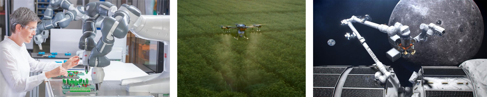

ECE 780 T03: Robot Dynamics and Control (Spring 2022)
Time and place
Wednesday, Friday 11:30-12:50, E7 4437Office hours
Wednesday 13:30-15:30 Description
This course will introduce students to dynamic modeling and control techniques for robotic systems, and expose them to some cutting-edge research. The course will be divided into six modules, corresponding to the following topics:- Robot dynamics
- Motion control of manipulators
- Force control of manipulators
- Mobile robots
- Motion control of mobile robots
- Optimization-based control of robotic systems
Prerequisites
There are no formal prerequisites for the course. Some knowledge of linear algebra, mathematical optimization, control systems, and robot kinematics can make life a bit easier.Reading
There is no required textbook. The following texts will be used for parts of the course.- Mark Spong, Seth Hutchinson, and Mathukumalli Vidyasagar, Robot modeling and control, John Wiley & Sons, 2020
- Bruno Siciliano, Lorenzo Sciavicco, Luigi Villani, and Giuseppe Oriolo, Robotics. Modelling, planning and control, Springer, 2009
- Stephen Boyd and Lieven Vandenberghe, Convex optimization, Cambridge University Press, 2004
- Magnus Egerstedt, Robot Ecology: Constraint-Based Design for Long-Duration Autonomy, Princeton University Press, 2021
Grading
- Homeworks: 60%
- Project: 40%
Project details
The project may consist of:- Solution to a problem in the student's research area using the techniques covered during the course
- Independent study of a topic not covered in class
The deliverables will be three:
- A short proposal, in the form of a 1-page PDF document, containing:
- Problem description
- Novelty and/or impact
- How robot dynamics and control techniques play a key role
- Technical challenges
- Metric for success
- Timeline
- A midterm project report, in the form a PDF document of maximum 4 pages, describing the progress made and the results obtained so far
- A final report, in the form of a PDF document of maximum 8 pages in the IEEE conference template (https://www.ieee.org/conferences/publishing/templates.html), structured as follows:
- Introduction
- Literature review
- Materials and methods
- Results
- Discussion
The work may be carried out individually or in a group of maximum 3 people. In the latter case, the report should be accompanied by the detailed description of the work carried out by each member of the group, including what sections of the report were written by whom.
Policy on Academic Integrity
Academic Integrity To maintain a culture of academic integrity, members of the University of Waterloo are expected to promote honesty, trust, fairness, respect and responsibility. A student is expected to know what constitutes academic integrity, to avoid committing academic offences, and to take responsibility for their actions. A student who is unsure whether an action constitutes an offence, or who needs help in learning how to avoid offences (e.g., plagiarism, cheating) or about “rules” for group work/collaboration should seek guidance from course instructor, academic advisor, or Graduate Associate Dean. When misconduct has been found to have occurred, disciplinary penalties will be imposed under Policy 71 - Student Discipline. For information on categories of offenses and types of penalties, students should refer to Policy 71 - Student Discipline, https://uwaterloo.ca/secretariat/policies-procedures-guidelines/policy-71.Grievance A student who believes that a decision affecting some aspect of their University life has been unfair or unreasonable may have grounds for initiating a grievance. Read Policy 70 - Student Petitions and Grievances, Section 4, https://uwaterloo.ca/secretariat/policies-procedures-guidelines/policy-70.
Appeals A student may appeal the finding and/or penalty in a decision made under Policy 70 - Student Petitions and Grievances (other than regarding a petition) or Policy 71 - Student Discipline if a ground for an appeal can be established. Read Policy 72 - Student Appeals, https://uwaterloo.ca/secretariat/policies-procedures-guidelines/policy-72.
Academic Integrity Office (UW) https://uwaterloo.ca/academic-integrity/.
Schedule
| Date | Subject | Optional reading | HW/project due |
|---|---|---|---|
| ROBOT DYNAMICS | |||
| May 4 | Direct and inverse kinematics | 3 [1], 2 [2] | |
| May 6 | Differential kinematics | 4 [1], 3 [2] | |
| May 11 | Inverse kinematics algorithms | 5 [1], 3 [2] | |
| May 13 | Lagrange formulation | 6 [1], 7 [2] | |
| May 18 | Dynamics of common manipulators | 6 [1], 7 [2] | |
| May 20 | Dynamic parameter identification | 7 [2] | HW1 (Dynamics) |
| MOTION CONTROL OF MANIPULATORS | |||
| Jun 1 | Centralized control | 9 [1], 8 [2] | |
| Jun 3 | Robust and adaptive control | 9 [1], 8 [2] | |
| Jun 6 | Operational space control | 9 [1], 8 [2] | Project proposal |
| FORCE CONTROL OF MANIPULATORS | |||
| Jun 13 | Impedance and admittance control | 10 [1], 9 [2] | |
| Jun 15 | Force control | 10 [1], 9 [2] | |
| MOBILE ROBOTS | |||
| Jun 17 | Kinematic constraints | 14 [1], 11 [2] | HW2 (Control of manipulators) |
| Jun 22 | Controllability | 14 [1], 11 [2] | |
| Jun 24 | Differential flatness | 14 [1], 11 [2] | |
| MOTION CONTROL OF MOBILE ROBOTS | |||
| Jun 29 | Control of unicycles | 14 [1], 11 [2] | HW3 (Mobile robots) |
| Jul 1 | Canada day — No class | ||
| Jul 6 | Control of autovehicles | Midterm project report | |
| Jul 8 | Control of quadrotors | ||
| OPTIMIZATION-BASED CONTROL OF ROBOTIC SYSTEMS | |||
| Jul 13 | Recap of mathematical optimization | 1 [3] | |
| Jul 15 | Constrained convex optimization | 4, 5 [3] | HW4 (Control of mobile robots) |
| Jul 20 | Min-norm control laws | 4 [4] | |
| Jul 22 | Research challenges and opportunities | Final project report |